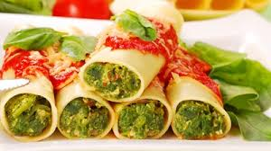
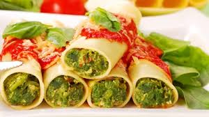

Fettuccine
04/16/2017Es un tipo de pasta, una de sus características más importantes es que es un fideo plano elaborado con huevo y harina. Generalmente se venden secos (en italiano: asciutti), aunque los de más calidad se suelen vender frescos, recién hechos a mano o, al menos, recién salidos de la máquina de hacer pasta. En Argentina es muy común el consumo de fetuchines con tuco y en ciertas ocasiones se les llama «cintitas». En Venezuela se les llama, en plural, fetuchini o fetuchines, pronunciando la 'ch' como en 'china'.
Risotto Parmigiano
04/16/2017Es una comida tradicional italiana realizada a base de arroz. Es uno de los modos más comunes de cocinar arroz en Italia. Es una comida originaria de la zona noroeste del país, concretamente del este de Piamonte, el oeste de Lombardía y de la zona de Verona, debido a la abundancia de arroz. Es uno de los pilares de la gastronomía norteña en general. El queso (usualmente parmesano) suele configurar habitualmente la seña característica del plato